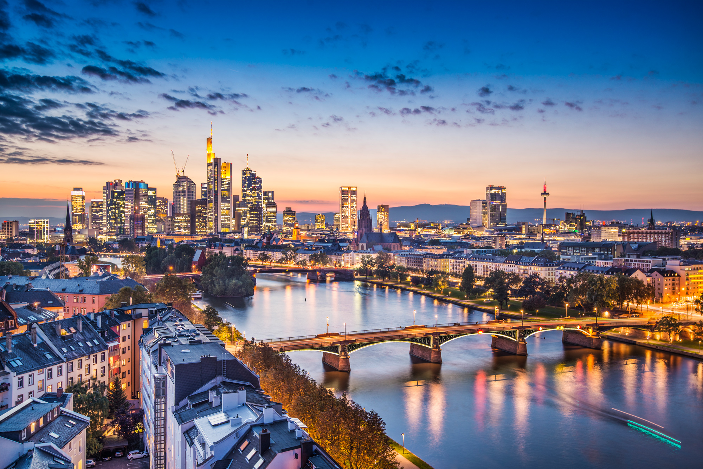

About Frankfurt
Frankfurt am Main is Germany's financial capital and a major international hub. The city is often called "Mainhattan" because of its impressive modern skyline — unusual for Germany — which towers above the River Main. But behind the glass towers lies a charming old town (Römerberg), excellent museums, and a lively culinary scene.
Frankfurt is also the birthplace of Johann Wolfgang von Goethe, one of the greatest writers in the German language, and home to the Frankfurt Book Fair — the world's largest trade fair for books.

Top Attractions
Römerberg (Old Town)
Frankfurt's beautifully reconstructed medieval old town square, with the historic Römer town hall and half-timbered buildings.
Städel Museum
One of Germany's most important art museums, with 700 years of European art history from Rembrandt to Picasso.
Goethe House
The reconstructed birthplace of Johann Wolfgang von Goethe, Germany's most celebrated writer, open to visitors as a museum.
Main Tower Observation Deck
One of only two skyscrapers in Frankfurt open to the public, offering a 360-degree view over the city from 200 metres up.
Sachsenhausen and Apple Wine
Frankfurt's most famous neighbourhood for nightlife and the legendary Apfelwein (apple wine) taverns lining the cobblestone streets.
Palmengarten
One of Germany's largest botanical gardens, with tropical glasshouses, rose gardens, and a pleasant park perfect for relaxing.
Frankfurt Airport
Frankfurt Airport (FRA) is Germany's largest and Europe's third-busiest airport. It has two terminals and is directly connected to the city by S-Bahn and long-distance trains, making it one of Europe's most convenient international gateway airports.